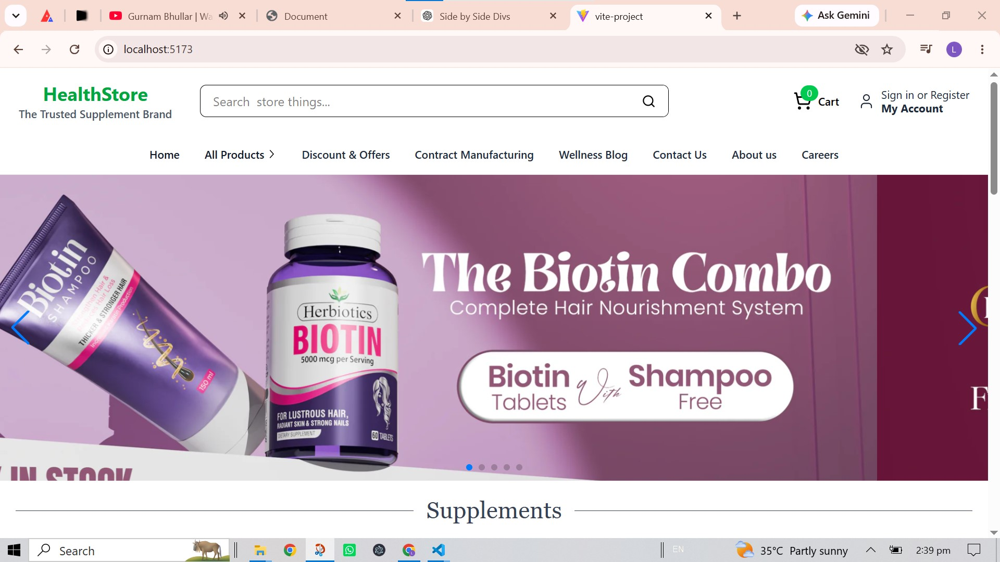
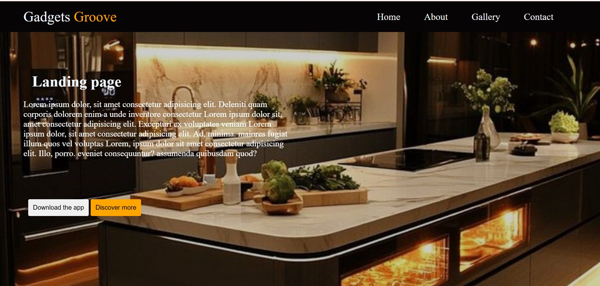

Health Care is a modern, responsive, and user-friendly healthcare website designed to provide patients with easy access to medical services and information. The website features a clean and professional interface that allows users to explore healthcare services, learn about doctors, book appointments, and find essential health-related information. The project is developed using HTML,CSS Java script, React Mongodbwith a strong focus on responsive design, accessibility, and an intuitive user experience. It includes sections such as Home, About, Services, Doctors, Appointment, Testimonials, Contact, and FAQs. This project demonstrates frontend development skills by implementing modern UI/UX principles, responsive layouts, interactive components, and clean, well-structured code to create a professional healthcare website.

Kitchen Aura is a modern, responsive, and user-friendly restaurant website designed to provide an engaging online experience for customers. The website features a clean and elegant interface where users can explore the restaurant, browse the menu, learn about the chefs, and easily make table reservations. The project is built using HTML, CSS , Java script , focusing on responsive design, smooth navigation, and an attractive user interface. It includes sections such as Home, About, Menu, Services, Gallery, Testimonials, Contact, and Reservation. Interactive elements, animations, and a mobile-friendly layout ensure a seamless experience across different devices. This project demonstrates strong frontend development skills, including responsive web design, clean code structure, modern UI/UX principles, and effective use of HTML, CSS, and JavaScript to create a professional restaurant website.
